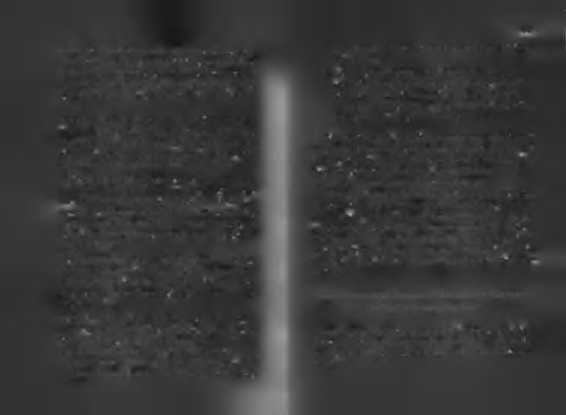

başkalarını da şaşırtmamaya başladığında aynı yerde patinaj
mış, başarısızlığın üzerine basıp başarıya yürümek, başarısızlı
yaptığınız, hatta "gençlerin önünü tıkadığınız" söylenmeye
ğı başarı için başarıyla kullanmak amacıyla hazırlanmış 10 yaklabaşlanır.
şım bulacaksınız. Bir şeyi denediniz olmadıysa, o olumsuz so
Bu durumda ne yapmalısınız?Sizi bir üst ligde daha büyük öl
nucu aşağıdaki şekillerden birine göre yorumlayabilirsiniz.
çekli işler başarmak kurtarır! Belki de bir sigorta şirketi kurmanızın ya da acentalar liginde yarışmanızın zamanı gelmiştir.
1. 'Bir gün mutlaka' tutumu: " Başarısız değilim, sadece
Yapabilmiş olsaydınız, sizi dahi şaşırtacak ne varsa onu de
" şimdilik" başarılı olmuş değilim! Bir gün mutlaka, bir şeneyin. Tıpkı ilk başarmızdaki gibi!
kilde istediğimi yapacağım. Başarım gelecekte beni
Başka ne yapabilirsiniz? Bir sene birinci, bir sene ikinci olur
bekliyor. Her şeye rağmen durmak yok, içimden gelen
sanız, insanlar bu sene kim birinci olacak diye merak ederler! Eskigüçle yola devam . .."
den "yenilmez" boksörler, bazen kaybederek seyircide "aca2. Ders alma tutumu: " însan ders aldığı bir başarısızlığı aş
ba bu defa sonuç ne olacak?" duygusu yaratıp tribünleri dol
mış, ondan daha büyük hale gelmiştir. Bu yaşadıklarımdururlardı. Bu bir taktiktir, ama benim okuruma yakışmaz.
dan ne yapmam ve ne yapmamam gerektiğini çok iyi
Bizim "ülkümüz yükselmek, ileri gitmektir!"
öğrendim. Öğrenirken geçen zamam okul yıllarıma sa
Bu arada söylemeden geçemeyeceğim. Dün yapamadığı
yıyorum. Başarısızlık üniversitesinden dersimi aldım,
bazı şeyleri bugün yaparak şaşırtanlara başarılı, kimsenin
şimdi amaç başarı üniversitesine dikey geçiş yapmak!"
yapamadığım yaparak herkesi şok edenlere "efsane" denir.
3. Bu sonuç başarısız sayılmaya yetmez: "Tek iş başardı
ğı içirt kasıla kasıla yaşayanların kendilerini başarılı
B a ş a r ıs ız lığ ı " b a ş a r ı y l a " k a r ş ıla m a k : B a ş a r ıs ız lığ ı b a ş a rı için nasıl görmesi nasıl ki bir illüzyon ise, tek başarısızlıkta kenku lla n a b ilirs in iz?
dini aşağılayan bir insanın yaptığı da o derece yanlıştır. Tek çiçekle bahar olmaz, tek kar tanesiyle de kış gelmez.
Başarısızlığı, zirveye ulaşmaya çalışan bir insanın üzerine doğ
Başarısız sayılmam için bu sonuç yetmez!"
ru yuvarlanarak gelen kayaya benzetebiliriz. Bazıları o kayanm
4. "Şablona uyuyorum," durumu: " Hedefine giderken defa
altında ezilir, bazıları zirveden vazgeçip vadiye geri kaçar,
larca başarısız olmak, tüm büyük adamların başına gelmiş,
bazıları kenara çekilip geçmesini bekler, bazıları ise gelen ka
benim de başıma geliyor, demek ki ben de büyük adamlarla
yanm üstüne zıplayıp tepesine basarak kendini daha ileriye
aynı yoldayım! Onların yaşadıklarının benzerini yaşıyofırlatır. Başarı-do eğitiminde siyah kuşak seviyesine ulaşmış insan
rum. Tanrım, kendimi çok özel hissediyorum! Ben bir
lardır bunlar.
seçilmişim! Başarım acayip görkemli olacak! Bu aklım
Bir insan başına gelen bir başarısızlığı, başarıya ulaşmak için na
dan geçen onların akimdan da geçmiş miydi acaba:)"
sıl kullanabilir? Aşağıda mücadeleci "çekirgeler" için hazırlan
